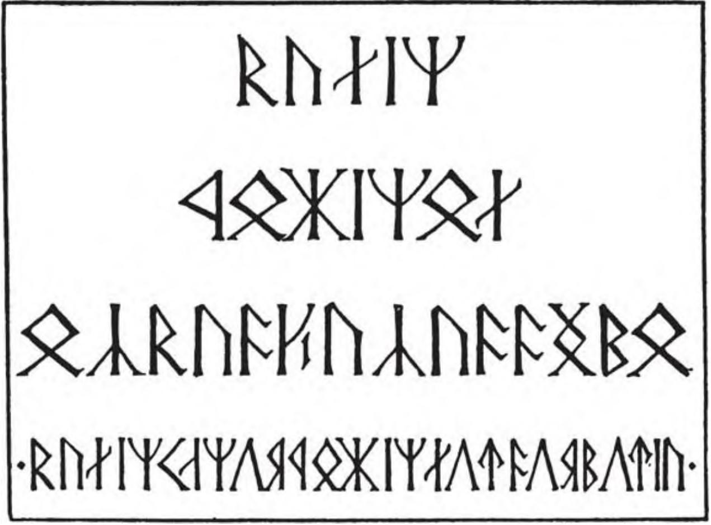

A JOURNEY IN THE DARK 319 north of the Great Gates; and it may not be easy to find the right road down to them. The eastern arch will probably prove to be the way that we must take; but before we make up our minds we ought to look about us. Let us go towards that light in the north door. If we could find a window it would help, but I fear that the light comes only down deep shafts.’ Following his lead the Company passed under the northern arch. They found themselves in a wide corridor. As they went along it the glimmer grew stronger, and they saw that it came through a doorway on their right. It was high and flat-topped, and the stone door was still upon its hinges, standing half open. Beyond it was a large square chamber. It was dimly lit, but to their eyes, after so long a time in the dark, it seemed dazzlingly bright, and they blinked as they entered. Their feet disturbed a deep dust upon the floor, and stumbled among things lying in the doorway whose shapes they could not at first make out. The chamber was lit by a wide shaft high in the further eastern wall; it slanted upwards and, far above, a small square patch of blue sky could be seen. The light of the shaft fell directly on a table in the middle of the room: a single oblong block, about two feet high, upon which was laid a great slab of white stone. ‘It looks like a tomb,’ muttered Frodo, and bent forwards with a curious sense of foreboding, to look more closely at it. Gandalf came quickly to his side. On the slab runes were deeply graven: RNAIY’ IRKINRY RARNEBNANBERBR RIENEAYANRKIVAPRASBAM
